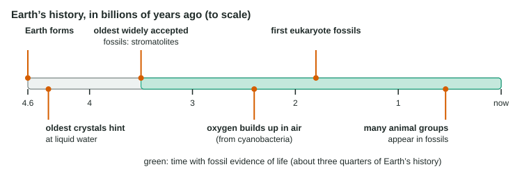

Every cell today comes from another cell. But the first cells cannot have come from cells, so at some point nonliving chemistry became life. No one has watched it happen, and no one knows exactly how it did. What scientists do have is evidence about when, a set of experiments showing that each step is chemically possible, and several competing ideas about where. This page walks through that evidence step by step.
When: the timeline of early Earth

Radiometric dating of meteorites and the oldest rocks puts the formation of early Earth at about 4.6 billion years ago (Figure 1). For its first few hundred million years Earth was battered by impacts and volcanic activity. Tiny crystals about 4.4 billion years old suggest that liquid water, and so oceans, existed early on.
The early atmosphere was very different from today's. It had almost no free oxygen, because no organisms were yet releasing it, and therefore no ozone layer: ultraviolet light reached the surface. Its main gases came from volcanoes: water vapor, carbon dioxide and nitrogen, with some hydrogen and, at least locally, methane and ammonia.
The earliest life left evidence about 3.5 billion years ago. The best-known traces are stromatolites, layered rock mounds built by mats of microbes that trap sediment and grow up through it, just as mats of cyanobacteria still do in a few warm, salty bays. Rocks of similar age also hold microfossils, tiny cell-like structures. So life had appeared within roughly the first billion years of Earth's history, and fossil evidence of life spans about three quarters of that history (3.5 ÷ 4.6 = 76%). Free oxygen built up in the air only around 2.4 billion years ago, after cyanobacteria had been releasing it for a long time.
How: a hypothesis in steps
![Six steps of a hypothesis for the origin of life. 1, simple molecules such as water, methane, ammonia, hydrogen, carbon dioxide and nitrogen, with energy from lightning, UV light or heat at vents; 2, monomers such as amino acids, sugars, nucleotide parts and fatty acids form without life; 3, monomers join on clay or mineral surfaces into RNA chains and peptides; 4, fatty acids form vesicles around RNA, protocells that grow and divide; 5, the RNA world, in which RNA stores information and catalyzes reactions and copying errors allow natural selection; 6, DNA and proteins take over, with RNA as the go-between. Each step has lab evidence, but how and where it happened is debated.](../figures/origin-steps.svg)
Most scientists break the origin of life into stages, each of which can be tested in the lab (Figure 2):
- Simple inorganic molecules react to form small organic molecules (monomers).
- Monomers join into polymers such as RNA and short peptides.
- Polymers become enclosed in membranes, forming protocells.
- Self-copying molecules make inheritance, variation and natural selection possible.
Step 1: monomers without life
Abiotic synthesis means making organic molecules without living things. In 1953, Stanley Miller and Harold Urey tested an idea proposed in the 1920s by Alexander Oparin and J. B. S. Haldane: that the early atmosphere, with energy from lightning or ultraviolet light, could make organic molecules. The Miller-Urey experiment circulated water vapor, methane, ammonia and hydrogen past electric sparks in a sealed apparatus. Within a week the water held several amino acids.
| It showed | It did not show |
|---|---|
| Amino acids form from simple gases plus energy, with no life involved | That life, or even proteins, formed in the flask |
| Many different organic molecules form at once | That early Earth's atmosphere had exactly these gases |
| Abiotic synthesis is fast on a geological scale (days) | How the products became concentrated enough to join into polymers |
Worked example: reading a spark experiment. In flasks with sparks, glycine rose from 0 to 3.6 µmol in 2 days and from 6.1 to 6.5 µmol between days 5 and 7. Flasks without sparks made none.
Step 1. Control. No glycine without sparks, so the energy input made the amino acid. Step 2. Rates. Early: 3.6 ÷ 2 = 1.8 µmol per day. Late: 0.4 ÷ 2 = 0.2 µmol per day. Step 3. Explain the slowdown. The flasks are sealed, so the starting gases are used up and are not replaced. Step 4. Limits. The result shows what is possible with these gases; whether early Earth had them is a separate question.
Many geologists now think the early atmosphere was mostly carbon dioxide and nitrogen, which gives lower yields in spark experiments. Repeated with these gases, and with buffered water, the experiments still make amino acids. Other sources may have added more: amino acids and nucleotide bases have been found in meteorites, and reactions around hydrothermal vents, where hot, mineral-rich water meets cold seawater, can also make organic molecules. Vents supply chemical energy and metal-rich mineral surfaces that speed reactions, and deep water protects against ultraviolet light and impacts.
Step 2: from monomers to polymers
Joining monomers is dehydration synthesis: each bond releases a water molecule. In open water the reverse reaction, hydrolysis, tends to win, so long chains do not build up easily. Two settings help:
- Mineral surfaces such as clay bind monomers, concentrating them and holding them close together. On one kind of clay, activated nucleotides join into RNA chains dozens of bases long.
- Pools that dry and refill remove water as they dry, favoring dehydration reactions, then bring in new monomers when they refill.
Step 3: protocells
Fatty acids, simple relatives of the lipids in your membranes, assemble on their own in water into hollow vesicles bounded by a membrane. In the lab, such vesicles grow by taking in more fatty acid and can divide when stretched or shaken. Clay speeds their formation, and RNA stuck to clay particles ends up inside the vesicles that form around them. A membrane-bound package like this is a protocell: it keeps its molecules together, so a molecule that helps its own protocell grow also helps its own copies.
Step 4: the RNA world
Modern cells need DNA to store information and proteins to catalyze reactions, including the reactions that copy DNA and make proteins. Which came first? The RNA world hypothesis proposes that neither did: RNA came first, because it can do both jobs.
| DNA | RNA | Protein | |
|---|---|---|---|
| Stores a copyable sequence | Yes | Yes | No |
| Catalyzes reactions in cells | No | Yes (ribozymes) | Yes (enzymes) |
| Stability | High | Lower | Varies |
The evidence: ribozymes, RNA molecules that catalyze reactions, exist in all cells. The site in the ribosome that joins amino acids is made of rRNA, not protein, as if protein synthesis began in an RNA world. In the lab, researchers have evolved ribozymes that copy other RNA strands. When copying makes errors and nucleotides are limited, the better copiers become more common: natural selection acting on molecules. Later, DNA, which lacks the reactive 2′ –OH of ribose and is double-stranded, took over storage because it is more stable, and proteins, built from 20 kinds of amino acids, took over most catalysis. RNA kept its roles as messenger, adapter and ribosome core.